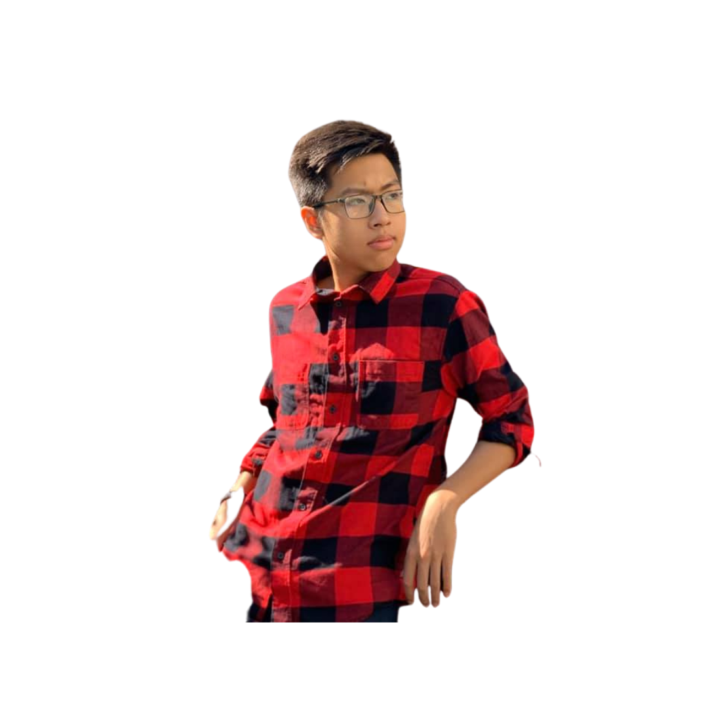
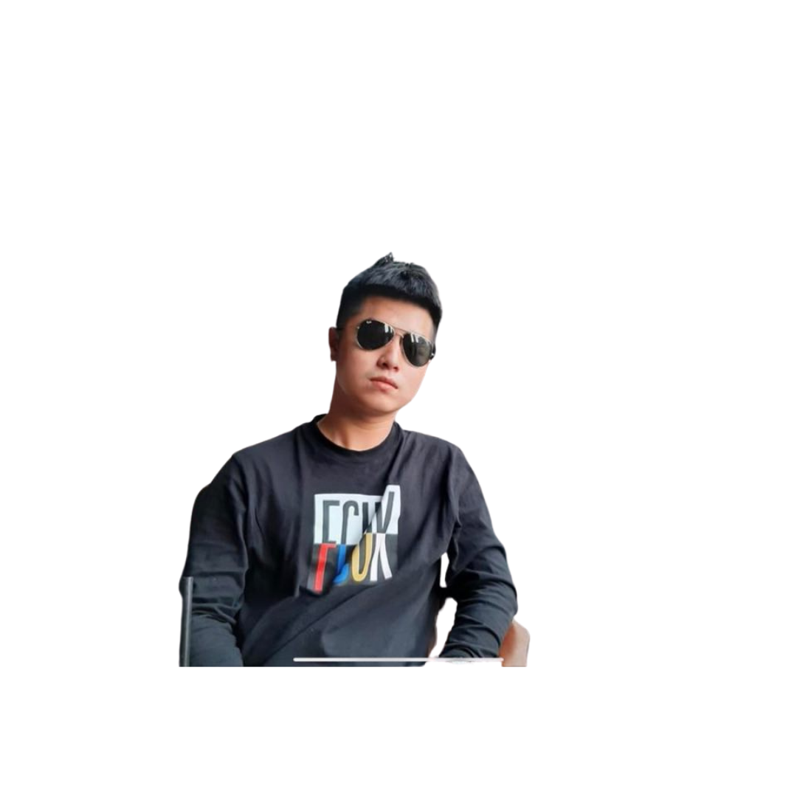

Our group tends to create a play-based learning game. This group aims to have as much fun and gain as much experience in making and developing an app. Our group eagers to learn as many things this semester as possible and have fun along the way, and for that reason, we decided to choose Bao's idea for this group project. Moreover, we get to use Pygame to develop a game, an entirely different experience, hence, learning many things along the way. Many people recently prefer to play simple yet fun games to play, which is perfect for our group project since our team members are beginner coders and lack experience. Because our game is a 2D retro running game, it is fun and easy to place, yet it could help people gain many pieces of knowledge as well. What is more, this project helps us a lot in terms of career plans and the future. First and foremost, creating this game encourages us to self-study more and helps us gain the experience required to become an IT professional. To make it more transparent, to have an IT professional's mind and think like them. Second of all, making this game means we get a chance to interact with other coding languages as well, such as C, Java. However, in this project, we only use Pygame because our time is limited.
A brief description about our project
The game interface
On this
project, we will create a game called “Deadline Rush.” This endless running
game is about a story of an RMIT student chased down by a monster named
“Deadline.” While running, there will be many objects that appear to prevent
the student from continuing running. To help the student overcome those
objects, the player must correctly answer a multiple-choice question related to
their major chosen in the pre-game stage. Otherwise, the student will get stuck
and be eaten by the “Deadline.”
After
playing this game, RMIT students can review what they have learned so far or
even learn new knowledge to master the ancient knowledge since playing this
game will comprehensively test their understanding and memory about the
lessons. Furthermore, they will also receive a chart, which points out their
strengths and weaknesses in a particular aspect of knowledge after the game to
choose what aspects to continue reviewing. Moreover, students can learn new
knowledge by playing this game as the question source are consulted with the
lecturers of RMIT.
Our
motivation for creating this game is to provide RMIT students with a friendly
way to review their lessons before deadlines or tests as we can see that RMIT
students are always stressed sitting in one place and sticking their eyes into
big books or lecture slides to review knowledge for deadlines and tests, which
is a classical and tedious method of learning. We think we can change their
habit of reviewing by offering them a more accessible way: play "Deadline
Rush." Moreover, RMIT Vietnam has taken a significant number of students
this semester, putting a tremendous strain on both lecturers and SAS as they will
not have enough time to meet students in consultations. This game can also help
them release stress as students will have one more option to review lessons or
solve academic issues.
We hope
that students will be interested in this game since it helps them review the
learned knowledge effectively. While playing, they will passively absorb
knowledge. Gradually, they can memorize the knowledge correctly and quickly.
Furthermore, students can still relax while learning by looking at the cute
monster or funny animations created in the game, which is not dull as looking
at a book for two or three hours. They will also be offered recommendation
documentation for reviewing their weaknesses after the game, which means they
do not have to spend time in the library looking for suitable book books that
may be on loan.
The
application of games in education is now widely used as it helps students
absorb knowledge passively while playing to not feel stressed or tired. This
play to learn model is popularly used in developed countries' educations such
as America and Canada. In terms of technical technology, this game is based on
Python's library pygame, which is one of the programming languages that let you
work more quickly and integrate your systems more effectively. Furthermore,
this programming is taught in the Introduction to programming in RMIT, one of
the most prestigious universities all over the world because of Python's basic
and accessible syntaxes.
In the
future, while meeting the employers, I can confidently show them about this
project. Firstly, this will point out that I have experience in project work,
which is one of the essential requirements of foreign companies. Moreover, they
will infer that I have an understanding of Python and pygame, which means I can
contribute to building software for them in big events such as company
anniversaries. Furthermore, this will point out that I have programming
mindsets, which means I can do well in coding. Therefore, I will stand a better
chance of having employment in big and profitable companies in the future.
While finding the idea for this project, we played Subway surfers, a famous game published by Kiloo. In this game, the runner will continuously run until he fails to overcome an object. The operation of this game is quite similar to my game. Moreover, we have referenced the format of a famous game show called “Who is the billionaire?”. Our game is a combination of the two mentioned games. Through research, our games currently have no competitors as this idea is relatively new, and it was come up while playing game.
The
primary aim of this project is to improve the academic performance of RMIT
students as there is a fact that the deadline at RMIT puts a great strain on students
since the workload is significant and students do not know how to review
lessons comprehensively. Most of them review by scanning the lecture slides or
books borrowed from the library, which may be boring as there is no direct
interaction between them and knowledge. Therefore, this game will help them
review lessons effectively by announcing to them whether they are on the right
path of understanding problems. Furthermore, once losing, students will realize
their weaknesses and get some useful material for reviewing the knowledge gaps.
Gradually, the result in their assignment will be improved, leading to the
university's improvement.
To
successfully achieve the aim, we need to complete the game's library question,
comprehensively providing students with various majors and knowledge. Moreover,
this will facilitate the review progress as all needed information is covered
in the game. If we can provide a question library with key and explanation, the
game will strongly attract a great number of students to download and play the
game as a method of reviewing lessons.
Another
necessary goal is to complete the game with animations, sounds, and effects to
make it more attractive, which can help get more players. This action is
essential as suitable sounds and attractive animations are two key components
deciding the game's success.
Marketing
for the game is also an important goal in this project. When we have finished
the project, we will launch the game for SST students before launching it to
widely RMIT Vietnam. Letting others know about the game will make the game gain
traction and be more famous for students. Moreover, letting a significant
number of students download the game is also an excellent way to check if any
bugs exist on the game, which will immediately be fixed to make the game
perfect.
The idea of this game incidentally came up while Bao was under a tremendous amount of pressure at the deadline time. He turned on the phone for relaxing, surfing the AppStore for exciting games. When he was playing Subway Surfer, an endless running game created by Kiloo, an idea came up. He thought of combining an endless running game with the appearance of objects in which there is a question about academic knowledge. He decided to follow the “Play-based learning” model, whose efficiency has been proved by numerous education- developed countries such as Poland, France, and the UK. Thanks to this idea, students can review knowledge more effectively and comfortably, which is not as stressful as sitting at the table and spend several hours reading books or lecture slides.
In this
project, we will create a game called “Deadline Rush.” The game is about a
story of an RMIT student who is being chased by a monster called “Deadline.”
There will be numerous objects on the road, in which there is a question about
academic knowledge. If the player can answer the question correctly, the
student will get past that object and may get some boost items such as hints
for the next questions. Otherwise, the student will get stuck and be eaten by
the Deadline. After finishing, the screen will pop up a chart of what has been
reviewed today and recommend students some useful summarize of their
weaknesses, which should be improved.
Moreover, the project will enhance
the student quality of RMIT as this game effectively help the student review
lessons by playing. Furthermore, this leases the strain on the staff as the
demand for querying will decrease dramatically.
To create
a game, we need to find tools. Through research, there are two main tools for
creating games, including Unity and Pygame. Unity is the most popular game tool
in the world. However, it required a deep understanding of C#, which is not our
advantage. Therefore, we will use Pygame, which requires a general
understanding of Python. As we have learned Python in Introduction to
programming course, we will access the problem easier.
Next, we
will find essential components such as images and icons needed to code and fix
bugs in the game. We will mainly use Canva and Flaticon to get the free source
of those images and icons. In case of lacking, we will ourselves create those
things by using adobe illustrator and photoshop.
After
that, we will execute the code to create the game using PyCharm Professional as
the IDE for coding pygame in Python. This stage will take a great deal of time.
As estimated, it will take about two months to perfect the game. Finally, we
can share the game with other SST people for testing and feedback before
launching it to all RMIT students.
To this
end, we need some support from other schools. We need a person who is a
master’s in design to choose the most suitable color mixture and images.
Furthermore, we also need students in professional communication to make a
video for advertising this game to make it more popular.
Bao made
a particular plan to execute this game with the initial motivation of helping
RMIT students to review the lessons effectively by playing. He started to make
a research and development plan and list some skills and tools for making this
game. In terms of the plan, he divides it into four main stages.
The first
stage is to think of essential functions and make a survey of students. In
terms of function development, some core functions are crucial, such as quit
function, moving function, and answer choosing function. Those functions are
compulsory as the game will not run if lacking one of these functions.
Furthermore, Bao plans to create some functions that can increase players'
experiences, such as restart, pause, major choosing, and boost items. The pause
function is to stop the game for a while until the players click on the button
again if they are interrupted by something. The restart function is to start
over the game if the player is lost or want to replay for review the knowledge
again. Moreover, the primary choosing function helps the player focus on their
particular major, which facilitates them to profoundly and effectively review a
field of knowledge. This function is beneficial when a student wants to try
hard for incoming tests or exams as they can concentrate on expected aspects,
which will boost their score significantly. Furthermore, Bao has done some
surveys about students' opinions about play-based learning methods and some
students' demands while playing a game to navigate the plan on the right path.
Through survey and research, he got much agreement that play-based learning is
the right way of learning as there is not too much pressure put on the
students. That agreement put a great motivation on him to complete this game.
The next stage is to create a
question library. As the game will continuously pop-up questions, we need a
library with more than a million multiple choice questions in one primary. The
question will be created based on the lecture slide and books from the library,
with the lecturer's supervising. Furthermore, the questions will be gotten from
the free source on the Internet to save a great deal of time. In the game, Bao
will use Python's random module to randomly generate the question, which avoids
dull feelings from the player and makes the game flexible. In the future, when
getting a higher level in building database, he will change the operation of
the question library to query languages by combining the game with a big
database of the question so that the game will run smoother, which increases
the experiences of the players.
The pre-final stage of making this
game is to complete the UI design and launch a prototype version for only SST
students. In terms of UI design, we will complete editing the background and
choose appropriate icons of objects consistent with the question inside. For
instance, when players interact with a Python object, it will pop up a question
related to Python, which helps them know what they are reviewing. Moreover, we
will add some animations to attract the players as it avoids dull feelings. We
will also perfect the expanded functions such as material recommendation,
learning- chart reflection, and Q&A function. Those functions facilitate
the reviewing progress of the students. Furthermore, those functions also help
the team optimize the game so that every student will get access to a perfect
game, which helps them review knowledge effectively. In terms of prototypes for
SST students, we will launch the game for those students for prototypes and get
feedback. Once receiving feedback, we will fix bugs, update some more functions
before launching it for all RMIT students.
The final
stage of this project is to push it online and get revenue per download. After
we perfect the game, we will launch it on the Internet with free downloading.
We will get revenue back for each download so that we can get the income and
help everyone enhance their knowledge, which gradually pushes the development
of society.
So far,
Bao has completed the first stage of the progress. He surveyed by using a
google form to collect SST students' answers, which is used to navigate the
next step. If they all agree about this model, we will gain a lot of traction
and motivation. Otherwise, we will change the plan suitably. Bao has completed
the demo with pygame in Python. He has exported essential functions such as
moving function by using key (>), answering by clicking on the answer, and
quitting on the quit button. This is enough for presentation as it can fully
express the operation of the game. After that, if we receive more
encouragement, we will push the speed of the progress.
Until now, we have completed stage one of the projects, which means we have complete 25% of the project. We have been sticking to the initial plan, which helps us work on good progress. However, we have to change a bit about the concept of the game. Firstly, we decided to change the 3-D concept to a 2-D concept as our knowledge is still limited, and we do not have much time to learn about 3D design. Therefore, we change the game to the 2D concept for easier management and coding. Furthermore, we have changed the tools from unity to pygame as unity requires a general understanding of C#, and we do not have enough time for learning a new programming language. Therefore, using pygame offered by Python is a suitable solution at this stage. We decided to change the background from a mono color to an anime background, which is more beautiful and attractive. This change will prevent players from being dull looking at just a grey background.
In our
team, each member plays an important role, which is divided based on each
person's skills and strength. The project is decided based on Bao's idea
through thorough discussion. Therefore, Bao must be the lead developer who
writes code and designs and motivates the teammate and manages the project.
Besides, Bao is also the technician designer and user-interface designer as he
is the one who understands the game deepest. He writes code in pygame and
designs the appearance of the character as well as background since he has some
experience in pygame and designing. Nhat takes after the role of algorithms
supervisor to support him effectively, who provides some useful algorithms when
Bao gets into trouble with coding. Thanks to his advice, Bao can solve problems
in coding and make the code cleaner. Long is also a supervisor in designing as
he has some art experience, and he has a good vision about layout and color
combination. Duy and Duc Anh are supporters in finding source code, images, and
material, which are extremely useful in creating a game.
So far,
Bao has created the demo game and ready for demonstration. He will gradually
add some more functions in the future if we have enough time. The contribution
of all members is progressively completing the report. Our team's role will
stay unchanged until the end of the deadline, as we all agree that it is hard
to take after the role of the person who is on satisfactory progress. We will
follow the role until the end to get the highest consistency of the project.
Our project is to make a game called “Deadline rush.” The game
aims to help RMIT students can study while entertain and relax at the same
time. You will control one character, moved by keyboards. When you enter the
game, the main menu will pop-up, and there will be three options: Start game,
Settings, and Export learning progress chart. In the Setting, you can adjust
the screen brightness, size, vibration. When you click “Start game,” there will
be three saving slots for you. After choosing a slot, you have to choose your
major, and then the game will begin. You move the characters by using keyboards
and use the mouse to answer questions. A monster will be chasing you. The game
will have three difficulties: Easy, medium, and hard. If you choose the wrong answers, the monster will come
closer and eventually eat you. We also add the pause feature in case you want
to pause anytime. There will be a restart button if you want to restart the
whole progress. The questions are based on your major, so don’t worry if it is
not related. When you finish the game or when the monster eats you, there will
be a button to export all of your progress into a chart so that you can see how
well you have performed. Moreover, when you return to the main menu, in the
“Export learning progress,” you can choose a specific saving slot and view the
chart. The printer is also supported if you want to print out the chart.
Although our group game has some fantastic features and UI
experiences, some small drawbacks and limitations are due to our current
knowledge and time. First of all, the game does not include a record feature,
meaning it does not feel safe the highest score the player has to achieve
during game time and does not show the progress of how well the player has
played. Second, the game is single-player only, although it is fun to have
multiplayer or to have friends to play with, our game only supports one player.
Moreover, because this is still a demo game for RMIT students, this game is
still an offline game, but we can make it possible to play the game online with
many other RMIT students shortly. What is more, because it is not online and
multiplayer yet, the game does not have the feature to rank or link between
players or friends who have the higher score or who is at which ranks like
Kahoot, for example. The third drawback of our game is that there are
limitations to the design of the character and in movements, because all five
members have not studied anything related to design, so we need to design it
ourselves, which looks ok to a certain extent. Lastly, our game only has a
limitation of questions, there is a finite number of questions, but soon, we
would store a database of questions and make the game more challenging. To add
to the equation, we would add a randomize feature to make the question appear
randomly, not in the order that every time the player starts and can see the
same question all over again.
We will use a laptop with a suitable configuration and other accessories such as a mouse for fast operation and earphones for edit sounds and audios to develop this ideal project. We will use PyCharm Pro 2020.2.1 as IDE and especially Pygame to program the game in terms of software. Pygame is a library supported by Python, which provides us with syntaxes to program games with ease. Because we have had vital knowledge about Python, we find Pygame not too challenging to learn to create a simple game. Due to a short time being exposed to Pygame, we have just created a basic demo project. However, it is enough for everyone to understand our idea. And in the future, we are trying to promote our programming skills so that we can develop other games and application.
Testing is one of the most important
processes during our game development, and it decides our project outcome. To
make sure that the game runs properly, and its outcome is to meet the users’
entertaining and learning efficiency as our expectation, we have to test it to
find out bugs or other unusual problems, and we have to fix it from that. This
process repeats many times, and it depends on the number, types, severity of
bugs occurring in our project. To test the game, firstly, we try playing the
game to test its features and functions to ensure its friendliness to users in
many aspects. In this game, its UI must be comprehensive and straightforward,
symbolized buttons such as pause, restart, play, the exit must have the right
functions so that users can control the game properly without facing against
some glitches, characters’ animation must be operated correctly. Next, soak
testing is necessary for this game to determine if there will be some RAM leaks
or other bugs or if this game is still stable when this game is left paused
very long. Finally, it will be a disaster if this game is not secured, which
means security testing is critical. This test is done to check if its security
is strong enough to protect its data when it operates in an environment with
foreign threats, flawed operation systems, and weak-coded algorithms. Besides, during
the testing process from the simple to the complex, we always record testing
histories and bugs occurring in our project to remember and learn how to fix
them properly, which makes us improve our testing skills and use them to test
other games and applications. However, because every game has its bugs, we
cannot fix all the bugs in our project. Therefore, we have to do our best to
make the game consist of as few errors as possible, but it still meets
expectations.
Until our project runs properly, and
its bugs are restricted as much as possible, we will invite about two hundred
students on campus to test our game. Moreover, these students may be SST
students, our old friends, or even our relatives who also study on the same
campus. If they feel relaxed and they can review the lessons effectively, our
project will be successful, and we will popularize it to all students from not
only in this campus but also RMIT Universities from other locations such as
Hanoi and Australia.
Timeframe for last four weeks of the course
Timeframe for the next 12 weeks after the course
This is the first time that we have carried out a game project, so we may not have a fair amount of experience with scenarios. Game programming requires several steps, such as story planning, movie character formation, code writing, error testing. It is not easy to complete the game project, but it requires all team members' contributions. There are some problems that impact our results. Firstly, there seems to be a dispute among members because of heterogeneous perspectives. We do not exclude the risk that individual team members would leave their jobs in the middle, putting pressure on the remainder. Secondly, not enough knowledge is available to overcome software risk issues. Programming is a new area for us, so we need to acquire a specific programming language, such as C, Java, and Python, to do a game programming project. I have some simple mistake effects on my work during python programming, such as syntax errors, runtime errors, index errors. We are also writing the code attached without breaking it into several files, resulting in time-consuming to correct errors. On the other hand, capacity and software are not compatible with the computer, which leaves one of the significant problems. These errors left me unable to run the software successfully.
Clear
communication must be maintained throughout every member of the team.
Miscommunication, misconceptions can lead to unexpected consequences and
results in bad grades. Every member of our team already friends in real life,
and we also study other courses together, so we have a considerable advantage
to explore the strengths and weaknesses of one another. We have two main ways
to communicate: offline and online.
As for my
team, face-to-face meetings take place every day for a minimum duration of 15
minutes. Each member is expected to attend at least three times a week. We
encourage every member to go to offline meetings rather than online because it
is easier to convey our ideas. However, not all of us can be at school all the
time.
Online
meetings are necessary to maintain communication when we are at home, or one of
our team members cannot go to school. There are many technologies at our
disposal. For texting, we have Facebook Messenger, Discord. For making video
calls, we have Microsoft Teams, Zoom. For sharing code or working on a project,
we have GitHub, Codeshare. Each member is expected to maintain clear
communication with other team members. Should there be any problems, we can
address them quickly and, therefore, having more time to resolve them. If there
is one member who does not respond to communication, at first, we still try to
reach out to that person. If the situation continues, we have no choice but to
talk to the lecturer about this, and that person has to leave the team.
A game project requires many steps to become a product, so we will divide tasks into sections to suit each person's abilities. It is divided into four sections: design, art, development, test. The game designer is considered a game's soul who raises the game's challenge, the plot, the dialog, the functions, ideas, and the levels. The game artist's role is to design characters, objects, buildings, and game environments. Moreover, develop a more beautiful picture and vibrant character picture. A game artist requires sophistication, creativity, and the latest art trends to be continually updated. Bao and Long will develop the game's content and functions, but Bao will go into detail about the game's plot and concept, and Long will design the graphics of the game. Basically, Bao and Long can properly organize thoughts, and they also enjoy playing games while having strong imagination and independent analysis. After that, a game developer is a man who writes code, makes software run successfully, and is compatible with several platforms. Nhat will be responsible for this work since he has the experience and understands programming languages such as C and Java. Finally, Duy and I will search and test how many errors are found in our products and report with team members to fix and replace better options.
So far, we have been working with one another for ten weeks. We have overcome many challenges. In those challenges, I contributed a great effort to make the assignments and reports look nice. I am also the one to summarize information for mistake checking and edit format. Besides, I am writing the description sections as the team decided to choose my idea for execution. About Nhat, he contributes a lot in writing complicated sections such as Scope and limit, which takes much time to launch an excellent report. He is also the one to divide tasks among the other members. Long is also a useful member since he can suggest various critical solutions and ways to execute that. Moreover, Long is also the one to remind members of deadlines. Duy is a cool student as he has some problems communicating. He can do well in writing short paragraphs and tables. Duc Anh is a student who has high-level skills in the presentation. He passed down his experiences and showed us how to present and transmit information directly and virtually to the audiences.
Overall, everybody is working hard on this project. We have a meeting every week, and everybody would attend without missing any section. For my part, I have contributed to many parts of this final assignment, such as writing reports, noting time frames, designing slides with Bao, and a little help in project idea. For Bao, he is the leader and the one who summarizes the report for everyone. He has done an outstanding job in leading the team and connecting every group. Bao helps me design a logo for our team, design slide, and overall, very hard work. However, sometime during the presentation, his pronunciation is not so clear. Nhat is a shy boy from the very beginning. He helps every member to finish before the deadline. Although his design skill is not good and he is a little bit hard to communicate, he gets the work well done in report and developing app. As for Duy, he is an introvert. He has some issues communicating and talking to the rest of the group members, making it a little difficult for me to reach out to him. However, Duy can work and study all by himself, which means that whatever tasks are given to him. He has done a spectacular job. For Duc Anh he has been working hard lately. However, he rarely meets up with us, and as for the report part, he basically has done and finished the report. However, he makes a lot of grammar mistakes and does not have the skills and means to write a report. Moreover, Bao and I have to help him cite all references because he forgot to cite them, which can lead to plagiarism.
Being one of the first teams formed early in the course, we have much time working and evaluating each other. Overall, I think the group is performing well, although we have some drawbacks. As for technical writing skills, Bao and Long perform best in our team. They work with each other very well. Primarily Bao can design beautiful layouts and structure the report. As for the app, I am the primary creator, and Duy acts like a supporter to me. Four of us know each other very well and can support each other’s weaknesses. Duc Anh is still new to the RMIT environment and needs a lot of help. He has a reasonable tone of voice, body gesture, which results in a decent presenter. My team views me as a person of work. I always try my best, finish the tasks before the deadline. Sometimes I can be unstable, but most of the time, I am good progress.
Overall, our team performance is good, and we also have good interaction with one another. To be specific, as a team leader, Quoc Bao contributes more than the rest of us because he has not just written, modify some parts of the report, formatted and designed its document and presentation slide but also have a general comprehension of Pygame while the rest of us have only written other parts of that report which he has assigned us. Furthermore, it is sensible to ask the rest of us for some updates, which means he has great interaction. However, he should improve his presentation skills as well as his fluency and word choice. Minh Long is a fast-thinking and productive person in our team as he offers us a variety of ways to solve problems properly and effectively. Dang Nhat is very hard working, so he always tries his best to finish his assigned tasks, and he can even handle some complicated writing topics and other complex problems. On the other hand, Duc Anh has communicated very well with his teammates, but his technical writing skill is limited, and that weakness needs to enhance. Although I am very good at doing some individual tasks, I have a problem with my communication during teamwork. Therefore, I need to improve my communication so that I can break the ice with my teammates to contribute my working performance to my team in a better way.
Honestly, I feel that every member of my team has their own strong points and weak points. We are both very sociable, though, and do our jobs well. I will justify some points about our team members. Firstly, Bao has beautiful slide design, the skill of writing essays, and reasonably decent report making, mastery of content awareness. But his weakness is the accent when speaking English. About Duy, he can write codes and understand the lesson quickly. He can also apply the lesson to practice. However, he cannot do well in communication and report writing. In terms of Nhat, he is a cautious and persistent person who writes well. However, he cannot communicate very well. Turning to Long, he is a fast taker who is good at communication and presentation. Nevertheless, he is not good at writing. About me, I think I am good at communication. However, my writing is terrible, and I lack expression in public.
created with
templated.co .